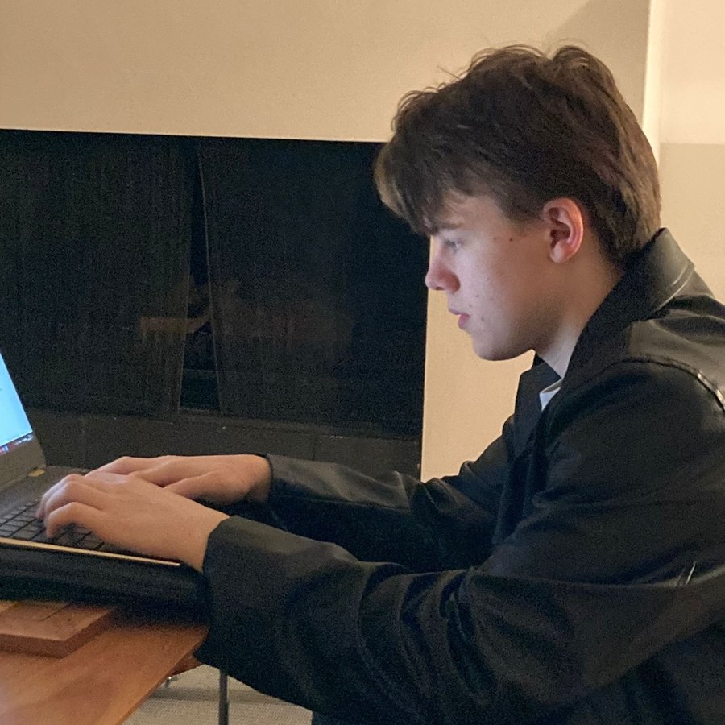

Dries Rooryck
/driːs ˈrɔːrɪk/ · drooryck10 (at) gmail (dot) com

I'm a fourth-year undergrad at Harvard University, where I am advised by David Alvarez-Melis and Mark Glickman.
I research how neural networks acquire and process language. Check out my recent paper on how code-switched text in training causes cross-lingual representation alignment across languages. Or this one on how language models acquire the ability to code-switch without any mixed-language data. Or check out my thesis on statistically principled LLM evaluation.
Feel free to reach out by email, or schedule a call with me here.